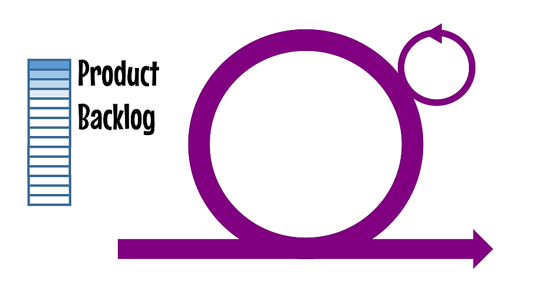
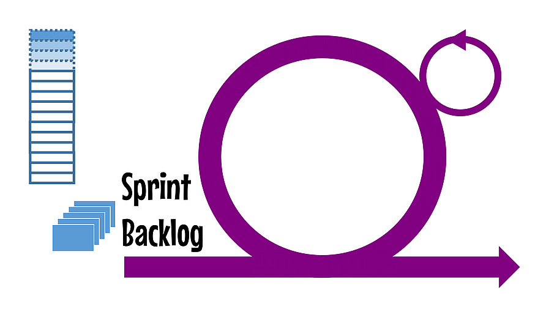
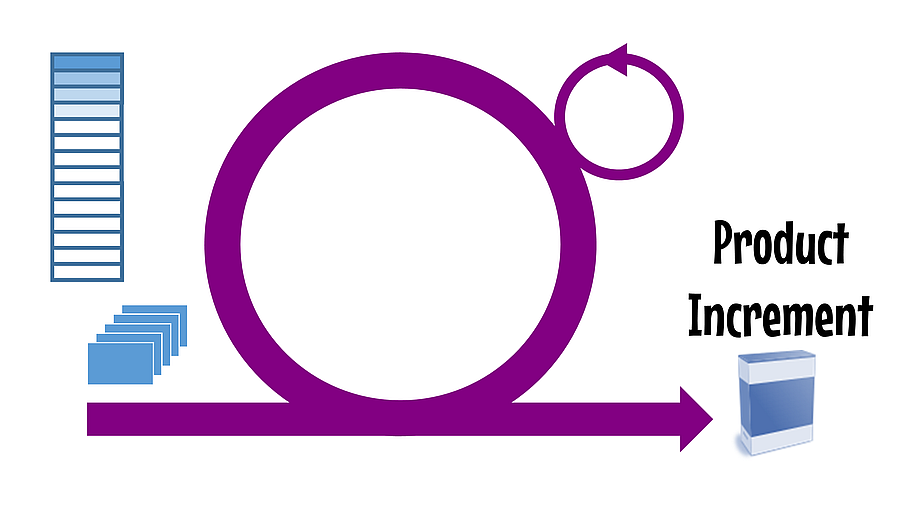
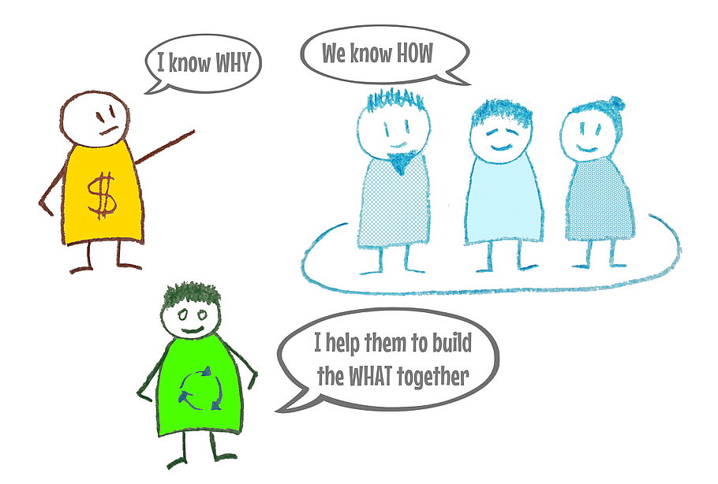

Introduction à l'Agile
F pour le fullscreen et S pour les speakernotes
Plan
- En 2 mots
- Quelques éléments de contexte
- Le manifeste
- Les 4 valeurs, l'une après l'autre...
- Quelques pratiques
- Pause
- Surprise
- Scrum et Kanban
- Interrogation
Quelques éléments de contexte
Pour ceux qui sont nés après le 1/1/1970
Naissance du logiciel
De la seconde guerre mondiale jusqu'à la fin des années 1960, un programme informatique:
- consiste en des traitements batchs
- automatise des processus répétitifs
- est essentiellement codé en assembleur
- économise les bits et les cycles CPU

La première crise du logiciel
Fin des années 60, début des 70
- En 10 ans, la puissance des ordinateurs est multipliée par 100, et la productivité du développement par 4
- Premier colloque de Génie Logiciel
- On cherche à industrialiser le développement logiciel
- Invention du développement en cascade
La crise encore
Le Standish Group publie en 1995 le premier Chaos Report
“Software development projects are in chaos, and we can no longer imitate the three monkeys -- hear no failures, see no failures, speak no failures.”
- 250 milliards de $ dépensés par an aux USA
- Seuls 16,2% des projets sont on-time et on-budget
La métaphore du pont

Cette photo illustre la première page du premier Chaos Report.
La métaphore du pont
Le développement logiciel est assimilé à une pratique d'ingénierie telle que la construction ou la mécanique.
- La conception est la phase créative qu'il est difficile d'estimer.
- La fabrication est la phase la plus coûteuse.
- Donc, une conception très détaillée permet de garantir une fabrication optimale.
Au bout du pont
- Un découpage en multiple phases.
- Des phases découpées en étapes.
- Des documents en abondance et toujours à valider.
- Des équipes de spécialistes sans vue d'ensemble.
- De la sous-traitance, de l'off-shore.
- Un effet tunnel.
- Beaucoup d'énergie passée à estimer, planifier, découper, affecter …
Une ingénierie pas comme les autres
Un groupe d'irréductibles skieurs refuse
l'analogie de la construction.
Coder n'est pas fabriquer.
Fabriquer, c'est compiler.
La fabrication est la phase la moins coûteuse, elle est automatisée.
La conception, phase créative, qui exige de la compétence, va jusqu'à l'écriture du code.
Les méthodes légères
En réaction aux "plan-driven methodologies" ou "méthodes lourdes"
- Dynamic systems development method ou DSDM [1994]
- Scrum [1995]
- par Ken Schwaber et Jeff Sutherland
- eXtreme Programming [1996]
- par Kent Beck, Ward Cunningham et Ron Jeffries
- Crystal Clear [1996]
- par Alistair Cockburn
- Feature-Driven Development ou FDD [1997]
- par Jeff De Luca
Le manifeste agile
C'est où les pistes ?
2 jours à la montagne
Du 11 au 13 février 2001, 17 "organizational anarchists" se retrouvent à Snowbird dans l'Utah, pour discuter méthodes de développement logiciel.
Ils aboutissent à la signature du Manifeste Agile
A vous de jouer !
Retrouver les valeurs du manisfeste
Les 12 principes
Dans le PuissancePoint
Quelques Pratiques
Un ensemble de pratiques au service de valeurs
Radiateur d'Information
Affichage mural pour diffuser une information pertinente : tableau des tâches, nombre total de tests, ...
- l'équipe n'a rien à cacher (notamment à ses clients)
- l'équipe n'a rien à se cacher: elle admet et confronte ses difficultés
- provoque la discussion
Radiateur d'Information
Radiateur d'Information
Daily Scrum
Réunion quotidienne d'un quart d'heure, debout.
Qu’as tu fait depuis le dernier scrum ? Qu’est ce que tu dois faire ?
Qu’est ce qui t’empêche de faire ton travail ?
- favorise la circulation d'informations importantes
- permet de se synchroniser
- contribue à la cohésion de l'équipe
Backlog
Liste de toutes les fonctionalités ou tâches nécessaires à la réalisation du projet.
- pour les prioriser (ordonnées par ordre d'importance)
- donne la vision d'ensemble
Backlog
Dans le backlog, on trouve, ligne après ligne :
- des anomalies à corriger
- des petites fonctionalités
- des tâches techniques
- des modules entiers à développer
L'item de backlog est une simple phrase qui va être affinée (précisée, détaillée, découpée)
au fur et à mesure du besoin.
User Story
Histoire utilisateur représentant un incrément du logiciel.
Son expression doit pouvoir tenir sur un post'it.
- découpe le travail à faire
- apporte de la valeur au client
- unité de priorisation, de négociation
User Story
Planning Poker
Estimation collective et relative des user stories.
L'estimation est faite en points de complexité ou en taille de T-shirt.
Tout le monde dévoile son estimation au même moment.
- vérifier la faisabilité d'une user story
- concevoir une solution
- estimer pour prioriser
Definition of Done
Définition formelle des critères permettant de dire qu'une story est terminée.
- éviter la question : "c'est fini-fini ?"
- checklist permettant de ne pas oublier des activités
- définition claire de ce qui va être comptabilisé
Rétrospective
Réunion régulière de l'équipe pour faire le bilan de la période passée et réfléchir aux améliorations possibles.
- améliore le fonctionnement de l'équipe
- favorise l'auto-organisation
Programmation en Binôme
2 développeurs travaillent ensemble sur un même poste de travail.
Celui qui rédige le code est
appelé conducteur, l'autre, appelé observateur, l'assiste. Ils échangent leur rôle régulièrement.
- améliore la qualité du code produit
- partage la connaissance
- meilleure capacité à rester concentré
Pause
Scrum
LA méthode agile
Origine
Ken Schwaber et Jeff Sutherland ont présenté Scrum pour la première fois à la conférence OOPSLA en 1995.
Scrum est le résultat de bonnes pratiques du développement logiciel observées
3 piliers
- Transparence
- Inspection
- Adaptation
Sprint

Daily Scrum

Product Backlog

Sprint Planning

Découpage en tâches
Sprint Review

C'est la démonstration, mais pas que
Rétrospective

Les Rôles

En résumé
Une méthode simple
Facile à comprendre
Difficile à maitriser
Kanban
La carte qui vient du Japon
Origine
A la fin des années 40, Toyota expérimente la production en flux tendu. Cela consiste à limiter la production d'un poste amont au juste besoin du poste aval.
A partir de 2005, une application du système Kanban aux métiers du savoir est développée sous l'impulsion de David Anderson.
Quel mot bizarre !

En japonais, KANBAN signifie "signal visuel" ou "étiquette".
On utilise un K majuscule pour la méthode uniquement.
4 principes
- Démarrez avec votre processus existant
- Engagez-vous à l'améliorer progressivement
- Respectez le processus, les rôles, les responsabilités
- Encouragez le leadership à tous les niveaux
6 pratiques clés
- Visualiser
- Limiter le WIP
- Gérer le flux
- Expliciter les règles
- Implémenter des boucles de feedback
- S'améliorer par la collaboration
Visualiser

Pour réduire les obstacles et augmenter la collaboration.
Limiter le travail en cours
Avec des limites hautes et basses.
Pour augmenter le débit et ne plus re-prioriser.
Gérer le flux
Mesurer pour améliorer et prévoir.
A vous de jouer !
Les 7 erreurs
Expliciter les règles du processus
- Règles aux interfaces (DoR, DoD)
- Règles internes
- Règles d'escalade
- Règles de changement des priorités
- Règles de purge
Les règles sont affichées et respectées.
Implémenter des boucles de feedback

La roue de Deming : PDCA
- Plan. Identifier une opportunité et plannifier le changement.
- Do. Tester le changement, à petite échelle si nécessaire.
- Check. Analyser les résultats, acquérir de l'expérience.
- Act. Si l'expérience est réussie, modifier les règles pour entériner le changement
S'améliorer par la collaboration et l'expérimentation
Un essai qui se transforme en échec n'en est pas un si l'ensemble de l'équipe en a appris quelque chose.
Votre culture valorise : la tolérance à l'échec, l'expérimentation scientifique, l'esprit d'initiative, la responsabilité collective.
En résumé
Une méthode à mettre en place progressivement,
bien adaptée aux travaux où la planification
moyen et long terme est impossible.
Le risque est d'oublier l'amélioration.
Un conseil : travaillez vos obstacles.
Une dernière pratique
Le ROTI
Return On Time Invested
POULET en français, selon la définition de Pablo Pernot:
Performance Octroyée selon l'Utilité et la Légitimité du sujet En relation avec le Temps passé
Return On Time Invested
- Totalement inutile, j'ai perdu mon temps
- Négatif, trop de temps par rapport à la valeur reçue
- Moyen, équilibre entre gain et temps passé
- Positif, gain supérieur au temps passé
- Réellement utile, vaut largement le temps passé
The End
- Cette présentation utilise reveal.js de Hakim El Hattab
- Snowbird Tram photo de D. Ramey Logan
- Fond du manifeste agile photo de Ward Cunningham
- Photo de tableau agile empruntée au site The Agile Pirate
{kind=link}